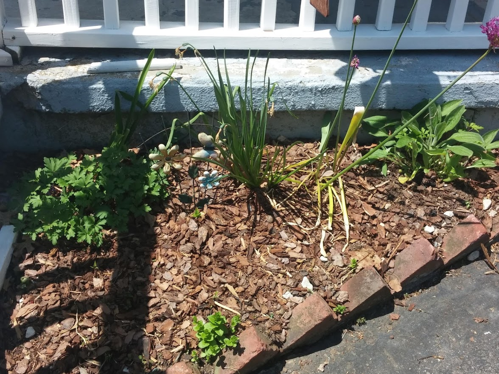
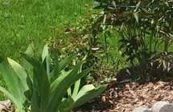
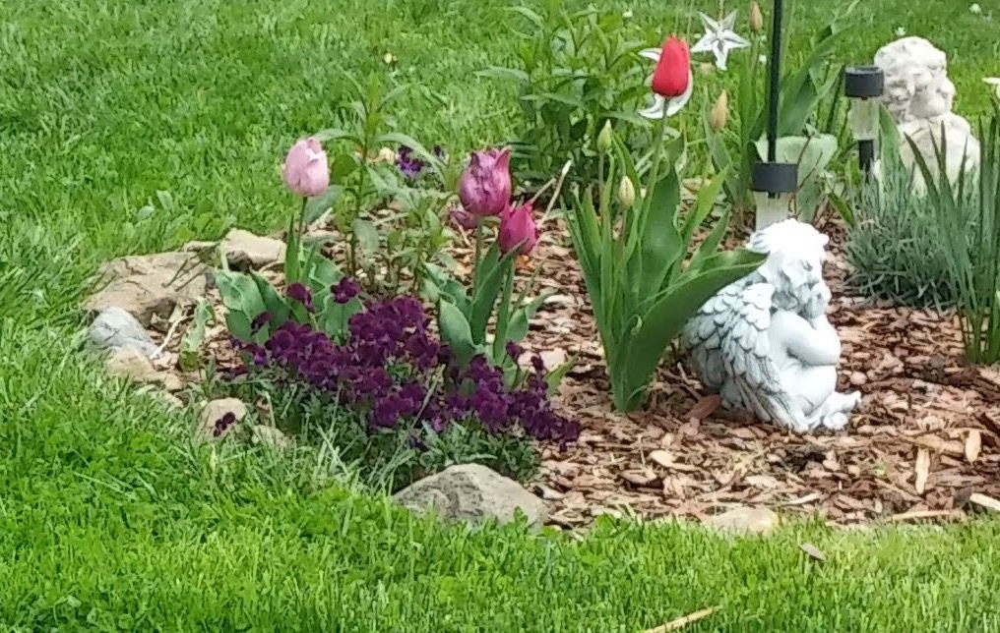
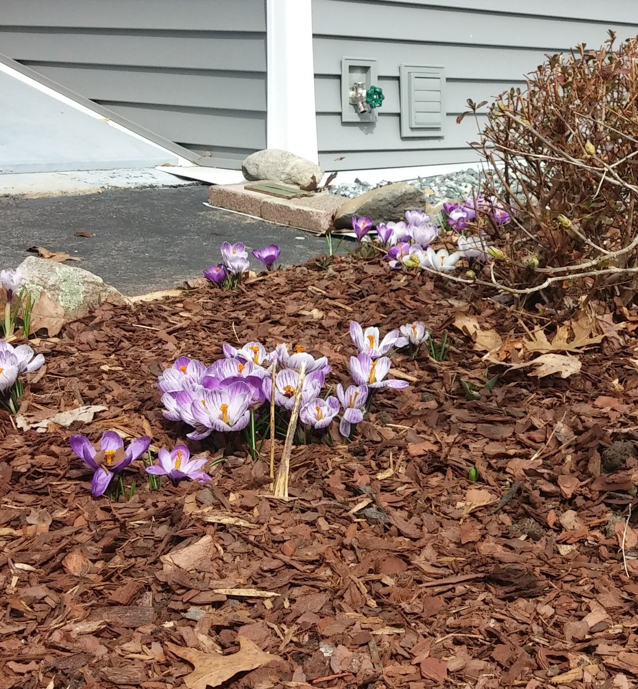
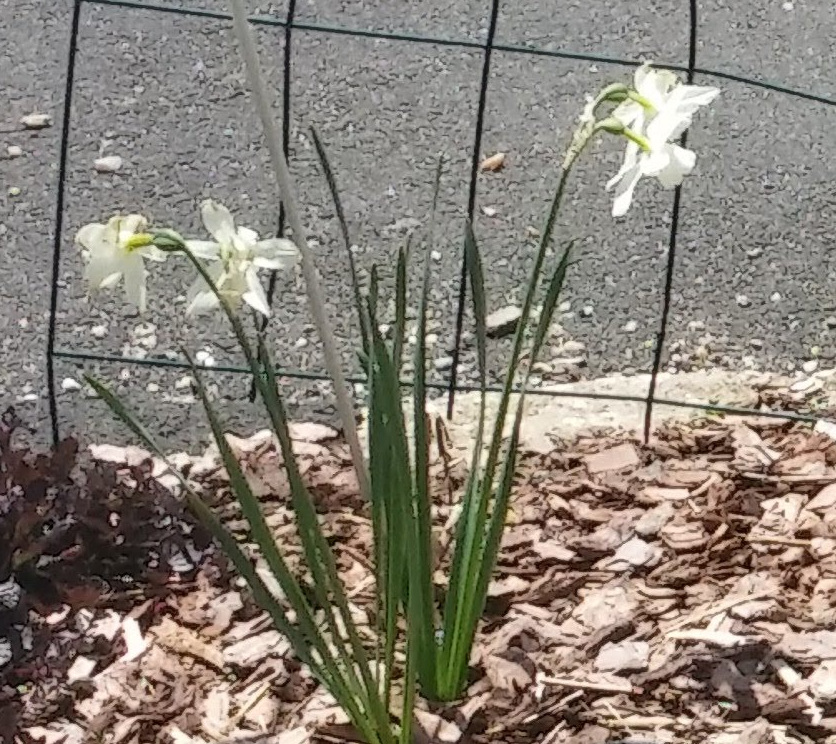
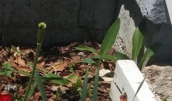
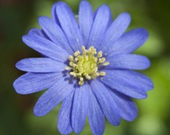

General Rose Info
- Blooms in the early-midsummer
- deadhead regularly
- cut back in spring when forsythia bloom
- General fertilizer
- 
- Pests include bugs and some other animal, needs insecticide!!!
- Not the easiest to care for , check site below for info
- Located in parking area and next to porch and other random places
- For more info visit Rose info
General Tulip Info
- Bloom in the spring
- Clip all foliage after flower fades and leaves start to yellow
- No need to thin
- General fertilizer
- 
- Pests include deer,bunnies
- Fall planted bulbs that don't always give good blooms
- Located in various gardens with several colors and sizes
- For more info visit Tulip info
General Crocus Info
- Bloom in the early spring
- Clip all foliage after flower fades and leaves start to yellow
- No need to thin
- General fertilizer
- 
- Pests include deer,bunnies
- Fall planted bulbs that spread graciously
- Located in various gardens with several colors
- For more info visit Crocus info
General Daffodil Info
- Blooms in the spring
- Clip all foliage after flower fades and leaves start to yellow
- No thinning neccesary , deadhead regularly
- General fertilizer
- 
- Pests may include deer and rabbits but rare
- several varieties in the gardens also known as Jonquil as pictured
- Located in various gardens mostly in front and side , yellow and white
- For more info visit Daffodil info
General Lily of the Valley Info
- Blooms in the spring
- Pull out all foliage after flower fades and leaves start to yellow<< /li>
- It is more of a weed that gets tiny bell looking flowers, but it over takes the garden, pull it out!
- General fertilizer
- 
- No known pests
- Pictured in the extreme right, alot has already beed taken out but keeps coming back
- Located around porch and near big rock on the side
- For more info visit Lily of the Valley info
General Four O'Clocks Info
- Blooms in the Summer
- cut down or pulllout after the frost has hit them, you will know!
- Collect the seeds at the end of summer (little black balls) and share or sow in different gardens for an easy care plant
- General fertilizer

- No known pests
- not sure of they just come back or reseed
- Located around porch and may be in other gardens
- For more info visit Four O'Clocks info
General Anemone Info
- Blooms early-mid spring
- low growing fall bulb
- No need to thin
- General fertilizer
- 
- no known pests
- Deadhead as needed.greens pull out after starting to yellow
- new bulbs 2020 planted and located in several gardens in red / white and periwinkle
- For more info visit Anemone info